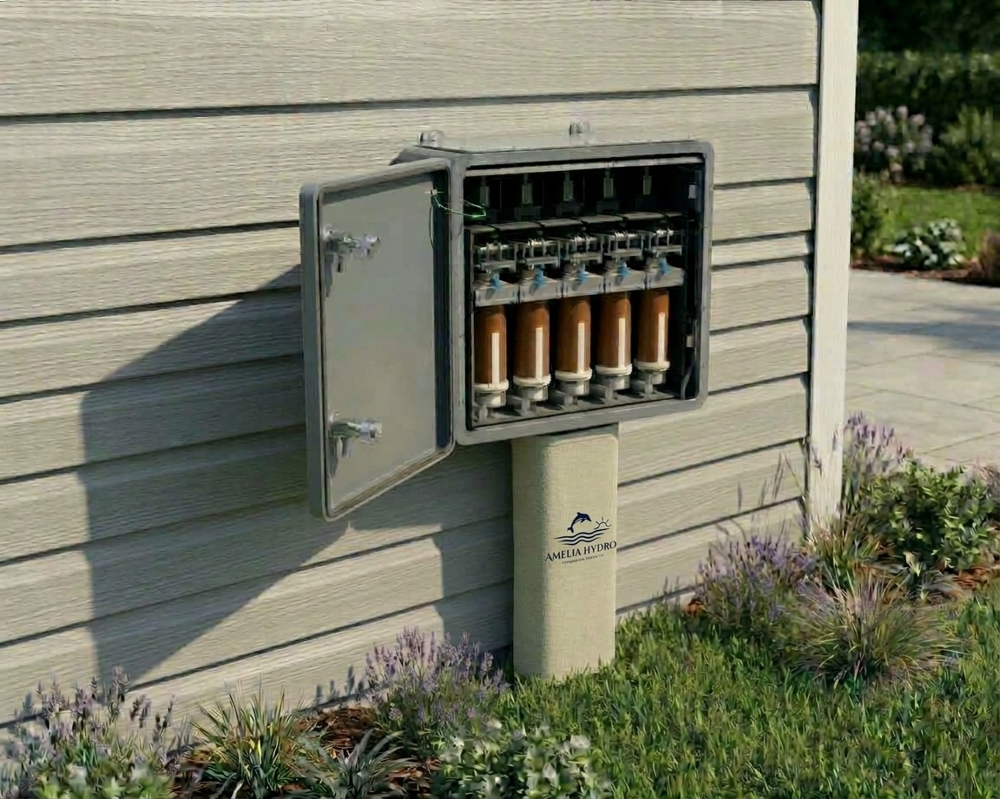

The First True Smart System
for Residential Irrigation
Professional grade agronomy and full spectrum turf treatment for the average homeowner as simple as making a cup of coffee.
The Evolution of Residential Irrigation
Defining True Smart SystemsFor decades, the industry focused purely on water management-scheduling timers, monitoring weather apps, and optimizing moisture. But a true residential smart system requires more than just managing water.
Residential irrigation systems began installs.
The system sprayed water.
Residential zones were configured for more accurate watering cycles.
The system sprayed water.
Smart controllers, weather monitoring, and soil moisture allowed for optimal water cycle management.
The system sprayed water.
No matter how much the equipment changed, the system only sprayed water. Until now.
Introducing the first true smart system for residential homes: bringing professional-grade agronomy and full-spectrum turf treatment to the average homeowner, as simple as making a cup of coffee.
A Different Category
Patent-PendingA sealed, one-use, solid-state hydraulic cartridge system utilizing standard residential infrastructure downstream of a certified RPZ.

Pre-Dosed, Sealed Canister Architecture
Eliminates open-air chemical pouring, measuring, and mixing, reducing liability and end-user exposure.
Zone-Specific Delivery (1-to-1 Mapping)
Ensures precise application, prevents cross-contamination, and allows each zone to be treated individually and separately.
Microprocessor-Free Reliability
Operates on a robust, solid-state electrical configuration controlled by authorized canister verification without fragile digital logic.
Continuous Bypass Integration
Designed with a continuous open bypass highway to ensure zero measurable back-pressure on the main irrigation line.
Controlled Hydraulic Action
Utilizes system water pressure to manage fluid delivery cleanly and predictably.
Advanced Performance, Safety & Family Protection
Massive Waste Reduction
Pinpoint targeting drastically cuts runoff and chemical waste compared to traditional broadcast methods.
-
01
Safety Shut-Offs & Automated Freshwater Flushing
Equipped with automatic safety shut-offs on pressure drops, an ability to automatically bypass with a fresh water cycle, and dedicated canister flushing.
-
02
Full-Spectrum Treatment Versatility
Fully supports both foliar and drench applications for fungicides, herbicides, insecticides, fertilizers, and soil conditioners.
-
03
Garage & Family Safety
Completely eliminates chemical mixing, open measuring, granular storage, and messy bags on the garage floor where children or pets can access them.
-
04
Effortless Automated Timing
Achieves optimal turf treatment timing without requiring homeowners to wake up early in the morning to manually manage applications.
Residential Turf Consulting & Diagnostics
Launching March 2027Exceptional lawns shouldn't be reserved for golf courses or commercial estates. Rooted in rigorous agronomic insight and practical field research, Amelia Hydro Dynamics helps everyday homeowners achieve thriving, beautiful yards through a straightforward, science-backed approach.
Systematic Diagnostic Approach
Comprehensive property evaluations utilizing professional soil sampling, laboratory testing, irrigation evaluations, and mower assessments to uncover root causes of turf stress.
Soil Health as the Foundation
Treating the soil as a living ecosystem, using targeted soil remediation strategies as the biological baseline to naturally bring a declining lawn back to life.
Tailored Recovery & Action Plans
Delivering objective, step-by-grade diagnostic and recovery blueprints specific to the subject property without confusing industry jargon.
HOA Advocacy & Mediation
Assisting homeowners and property managers with navigating, understanding, and resolving complex HOA landscape requirements and compliance disputes.
Education & Empowerment (No Treatments Applied)
We do not apply treatments or sell products. Instead, we provide independent analysis, educate homeowners on how to recognize early turf stress, and empower you to take control of your yard with confidence.
Commercial Partnerships & Access
Positioned for three channels of collaboration.
Landscape Supply Distribution
Shelf-ready cartridge architecture built for supply-house and retail distribution channels.
Irrigation Contractors
Drops into standard residential infrastructure downstream of a certified RPZ - no fragile digital logic to support.
Strategic Licensing Partners
Patent-pending architecture available for licensing across turf, pest, and adjacent categories.
Full technical packages, simulation data, and commercial terms are available under mutual NDA.
Strategic Inquiries & Direct Contact
William Hase | Managing Member
Follow progress, updates, and videos on LinkedIn.
william.hase@ameliahydrodynamics.com